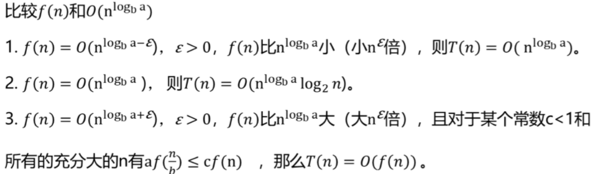

算法设计与分析基础
1. 算法基础
1.1 渐进复杂度分析
1.1.1 概述
时间复杂度，空间复杂度 只考虑最高阶
1.1.2 渐进复杂度分析
大O，渐进上界记号，上界越低越准确，越有意义
如果存在两个正的常数c和n0，对于任意n≥n0，都有f(n)≤c×g(n)，则记为f(n)=O(g(n)),即g(n)为f(n)的上界。
大Ω，渐进下界记号
大Θ，渐进紧界记号
重要结论：
如果T1(n)=O(f(n))，T2(n)=O(g(n)),那么
T1(n)+T2(n)= O(f(n)+g(n))
T1(n)*T2(n)= O(f(n)*g(n))
对任意常数k，(logn)^k ≤ O(n)。
(说明n的增长要快于log2n的任意次幂)
O(1)<O(log2n)<O(n)<O(nlog2n)<O(n2)<O(n3)O(2^n)<O(n!)<O(n^n)
1.1.3 算法的最好、最坏和平均情况
通常算最坏情况，因为一般平均情况就是最坏情况
1.1.4 时间复杂度分析的一般步骤
1.1.5 渐进空间复杂度分析
只考察临时变量所占空间，S(n)=O(g(n))、Ω(g(n))或Θ(g(n))
不考虑形参的空间，因为调用该算法的时候计算过一次
1.2 递归方程及其求解方法
递归算法复杂度分析
建立方程、求解方程、用渐进符号表示函数的阶建立递归方程
求解递归方程
代入法
递归树法
迭代法
从初始递归方程开始，反复用递归方程右边的等式代入左边的函数，直到得到初值。
主方法
T(n)=aT(n/b)+f(n)
不相等时，f(n)比n^log(b)a大或小n^ε倍，否则主方法不成立，例如：logn<n^ε
2 分治法
2.1概述
2.1.1条件
原问题与子问题形式相
不含公共子问题
子问题足够小的时候很容易求解
2.1.2步骤
划分：较小，相互独立的子问题
求解：容易求解则求解，不容易则递归
合并：子问题的解合并为原问题的解
k个子问题 k=1,减治法 k=2,二分法
2.1.3 求O(n)
主方法
2.2 排序问题
2.2.1 快速排序 二分法
平均(最好)时间复杂度: T(n) = O(nlogn)
最坏时间复杂度: T(n) = O(n2)
平均(最好)空间复杂度：O(logn)
最坏情况下空间复杂度：O(n)
2.2.2 归并排序 二分法
自底向上 T(n)=O(nlogn)
自顶向下 T(n)=O(nlogn) S(n)=O(n)
2.3 查找问题
2.3.1 折半查找 减治法
/*
给定有序数组R[low,high],输出值为k的元素的下表
*/
#include<iostream>
using namespace std;
int binSearch(int *R,int low,int high,int k){
int mid=(low+high)/2;
if(high<low) return -1;
if(k==R[mid]) return mid;
else if(k<R[mid]) return binSearch(R,low,mid-1,k);
else return binSearch(R,mid+1,high,k);
}
int main(){
int R[7]={0,1,2,5,7,8,9};//第0位空出
int n=6,k=5;
int result=binSearch(R,1,n,k);
cout<<result;
return 0;
}2.3.2 查找第k小元素 减治法
/*
设无序序列 T =(r1, r2, …, rn)，
T 的第k（1≤k≤n）小元素定义为T按升序排列后在第k个位置上的元素。
给定一个序列T和一个整数k，寻找 T 的第k小元素的问题称为选择问题。
算法——选择问题
输入：无序序列{R1, R2, …, Rn}，位置k
输出：返回第k小的元素值
1.设置初始查找区间：i=1，j=n;
2.以Ri为轴值对序列Ri~Rj进行一次划分，得到轴值的位置s;
3.将轴值位置s与k比较
3.1 如果k=s，则将Rs作为结果返回；
3.2 如果k<s，则j=s-1，转步骤2；
3.3 如果k>s, 则i=s+1，转步骤2。
*/
#include<iostream>
using namespace std;
int partition(int *R,int s,int t){
R[0]=R[s];
int i=s,j=t;
while(i!=j){
while(j>i&&R[j]>=R[0]) j--;
R[i]=R[j];
while(i<j&&R[i]<=R[0]) i++;
R[j]=R[i];
}
R[i]=R[0];
return i;
}
int quickSelect(int *R,int s,int t,int k){
int i;
if(s<t){
i=partition(R,s,t);
if(i==k) return R[i];
else if(i<k) return quickSelect(R,i+1,t,k);
else if(i>k) return quickSelect(R,s,i-1,k);
}
else if(s==t&&s==k) return R[s];
}
int main(){
int R[13]={0,5,3,8,1,10,6,9,12,17,4,15,22};
int k=6;//答案为8
int ans=quickSelect(R,1,12,k);
cout<<ans;
return 0;
}这两个问题虽然说是将原问题分解成了两个子问题，但是每次递归只选择了其中的一个子问题求解，不涉及问题的合并，所以是减治法。
2.4 组合问题
2.4.1 最大子段问题
二分法
分为左边、右边、中间一共三段，左右两边分别递归，中间部分求mid左边的最大和s1以及右边的最大和s2,再相加得s1+s2
T(n)=O(nlogn)
在线处理法 有代码
仅扫描一次，T(n)=O(n)
2.4.2 棋盘覆盖问题 几何问题 分治法(四分)
3 动态规划
3.1 概述
解决多阶段决策问题，用一个表来记录已解决的子问题
3.1.1 条件
最优子结构，最优解包含的子问题的解也是最优的(反证法证明)
有重叠子问题
无后效性，某一状态一旦确定，不受以后决策的影响
3.1.2 步骤
划分子问题
确定动态规划函数
填表，自底向上的计算最优解dp并保存，同时记录path信息
构造最优解，通过path信息回溯到得到最优解的过程
3.1.3 求O(n)
一般是看算法程序里有几层循环，有t层的话T(n)=O(n^t)
备忘录法的时间复杂度与一般动态规划相等，因为备忘录的最坏情况相当于一般动态规划
3.2 求解树塔问题（三角形最长路径）
递归法 重复计算效率低
备忘录方法（自顶向下）
求解出的结果放在 dp 中，相同问题只计算一次，是一般动态规划方法的变形
代码就是在一般的递归法中加入一个查表的动作，查到以后直接输出结果，不需要重复计算；当需要计算的时候，要将结果返回之前保存到dp数组中
#include <iostream>
#include <cstring>
#include <algorithm>
using namespace std;
int a[6][6] = {0, 0, 0, 0, 0, 0,
0, 8, 0, 0, 0, 0,
0, 12, 15, 0, 0, 0,
0, 3, 9, 6, 0, 0,
0, 8, 10, 5, 12, 0,
0, 16, 4, 18, 10, 9};
int m[6][6];
int n = 5;
int maxSum(int i, int j)
{
if (m[i][j] != -1)
return m[i][j];
if (i == n)
m[i][j] = a[i][j];
else
{
int x = maxSum(i + 1, j);
int y = maxSum(i + 1, j + 1);
m[i][j] = max(x, y) + a[i][j];
}
return m[i][j];
}
int main()
{
memset(m, -1, sizeof(m));
cout << maxSum(1, 1) << endl;
} //answer=60- 动态规划（自底向上）
#include <iostream>
#include <cstring>
#include <algorithm>
using namespace std;
int a[6][6] = {0, 0, 0, 0, 0, 0,
0, 8, 0, 0, 0, 0,
0, 12, 15, 0, 0, 0,
0, 3, 9, 6, 0, 0,
0, 8, 10, 5, 12, 0,
0, 16, 4, 18, 10, 9};
int n = 5;
int maxSum()
{
int i, j;
for (i = n - 1; i >= 1; i--)
{
for (j = 1; j <= i; j++)
{
a[i][j] = max(a[i + 1][j], a[i + 1][j + 1]) + a[i][j];
}
}
return a[1][1];
}
int main()
{
cout << maxSum() << endl;
} //answer=603.3 最长递增子序列问题
动态规划
#include <iostream>
#include <cstring>
using namespace std;
#define MAX 30
//问题表示
int a[] = {-1, 2, 1, 5, 3, 6, 4, 8, 9, 7}; //第0位空出
int n = sizeof(a) / sizeof(a[0]);
//求解结果表示
int dp[MAX];
void solve()
{
dp[1] = 1;
for (int i = 2; i <= n; i++)
{
dp[1] = 1;
for (int k = 1; k < i; k++)
{
if (a[k] < a[i] && dp[i] < dp[k] + 1)
{
dp[i] = dp[k] + 1;
}
}
}
}
int main()
{
solve();
cout << dp[n] << endl;
return 0;
} //answer=43.4 最长公共子序列问题
动态规划
- 通过 dp 求最优解
- 通过 vector 回溯求最优解
//类似0-1背包问题
#include <iostream>
#include <algorithm>
#include <vector>//可以用vector向量回溯路径，本方法没有用到
#include <cstring>
using namespace std;
#define MAX 51 //序列中最多的字符个数
//问题表示
string x = "abcbdb", y = "acbbabdbb"; //两个待求解序列
int dp[MAX][MAX]; //动态规划数组
vector<char> subs; //存放LCS
int trace[MAX];
void LCSlength()
{
//边界条件在初始化中已完成
for (int i = 1; i <= x.length(); i++)
{
for (int j = 1; j <= y.length(); j++)
{
//最后一个字符相等
if (x[i - 1] == y[j - 1])
dp[i][j] = dp[i - 1][j - 1] + 1;
//最后一个字符不相等
else
dp[i][j] = max(dp[i - 1][j], dp[i][j - 1]);
}
}
}
void traceBack()
{
int i = x.length(), j = y.length();
while (i != 0 && j != 0)
{
//最后一个字符相等只有一种情况，
//就是dp[i-1][j-1]=dp[i][j]且dp[i][j]!=dp[i][j-1]且dp[i][j]!=dp[i-1][j]
if (dp[i][j] == dp[i][j - 1])
{
j = j - 1;
trace[i] = 0;
}
//这里要注意，因为先往左边找，再往上边找，所求的相同字符就在x字符串中
//如果先往上面找，则结论相反
else if (dp[i][j] == dp[i - 1][j])
{
i = i - 1;
trace[i] = 0;
}
else
{
trace[i] = 1;
i = i - 1;
j = j - 1;
}
}
for(int i=1;i<=x.length();i++){
if (trace[i] != 0)
{
cout << x[i-1] << " ";
}
}
}
int main()
{
memset(dp, 0, sizeof(dp));
memset(trace, 0, sizeof(trace));
LCSlength();
cout << dp[x.length()][y.length()]<<endl;
traceBack();
} //answer=5,abbdb或acbdb3.5 0/1背包问题
动态规划
#include <iostream>
#include <cstring>
#include <algorithm>
using namespace std;
#define MAXN 30
//问题表示
int n = 5, C = 10; //5种物品,限制重量不超过10
int w[MAXN] = {0, 2, 2, 6, 5, 4}; //下标0不用
int v[MAXN] = {0, 6, 3, 5, 4, 6}; //下标0不用
//求解结果表示
int dp[MAXN][MAXN]; //i,r
int x[MAXN]; //存放最优解
int maxv; //存放最优解的总价值
void knapSack()
{
//边界条件已在初始化中完成
for (int i = 1; i <= n; i++)
{ //第i件
for (int j = 1; j <= C; j++)
{ //剩余价值
//放不下
if (j < w[i])
{
dp[i][j] = dp[i - 1][j];
}
//放得下的情况下，放还是不放？
else
{
dp[i][j] = max(dp[i - 1][j - w[i]] + v[i], dp[i - 1][j]);
}
}
}
}
void traceBack() //回推找到最优解
{
int i = n, j = C; //从最后一个开始找
while (i != 0)
{
//前一个没放入
if (dp[i][j] == dp[i - 1][j])
{
x[i] = 0;
}
//放入了
else
{
x[i] = 1;
j = j - w[i];
}
i--; //回到上一层
}
}
int main()
{
memset(dp, 0, sizeof(dp));
memset(x,0,sizeof(x));
knapSack();
maxv = dp[n][C];
cout << maxv << endl;
traceBack();
for(int i=1;i<=n;i++){
if(x[i]==1){
cout<<i<<" ";
}
}
}3.6 最优连乘矩阵问题
动态规划
备忘录
3.7 TSP问题（旅行商问题）
动态规划
4 贪心算法
4.1 概述
通常获得近似最优解
4.1.1 条件
最优子结构
贪心选择性质：全局最优解可以通过一系列局部最优解得到
证明：数学归纳法
问题的最优解可以修改为以贪心选择开始
贪心选择之后，原问题简化为一个更小的类似子问题
数学归纳法证明：通过每一步贪心选择，最终可获得以一个整体最优解
4.1.2 步骤
1.分解
分解为若干个决策阶段，得到若干个决策子问题
2.决策
得到每个阶段的局部最优解，并缩小待求解问题的规模
3.合并
将各个阶段的局部最优解合并为全局最优解
0.有关概念
候选集和
解集合
选择函数：运用贪心策略指出哪个对象最有希望构成最优解
可行函数：判断加入新对象时是否可行
解决函数：判断是否构成完整解
4.1.3（重点）与动态规划法比较
相同点：都具有最优子结构性质
不同点：
求解思路
动态规划：自底向上求解，求解过程依赖于子问题的解，在求出子问题之后再做出选择
贪心算法：自顶向下求解，求解过程不依赖于子问题的解，仅在当前状态下做出最好的选择，即局部最优选择
适用问题
动态规划：重叠子问题
贪心算法：贪心选择性质
4.2 图着色问题
4.3 TSP问题
4.4 部分背包问题
贪心算法
#include <iostream>
#include <cstring>
#include <algorithm>
using namespace std;
#define MAXN 6
//问题表示
int n = 5;
double C = 100; //限重
struct NodeType
{
double w;
double v;
double p; //p=v/w
bool operator<(const NodeType &s) const
{
return p > s.p; //按p递减排序
}
};
NodeType P[] = {{0}, {10, 20}, {20, 30}, {30, 66}, {40, 40}, {50, 60}}; //下标0不用
//求解结果表示
double V; //最大价值
double x[MAXN];
void Knap() //求解背包问题并返回总价值
{
V = 0; //V初始化为0
double r = C; //背包中能装入的余下重量
memset(x, 0, sizeof(x)); //初始化x向量
int i = 1;
while (P[i].w < r) //物品i能够全部装入时循环
{
x[i] = 1; //装入物品i
r -= P[i].w; //减少背包中能装入的余下重量
V += P[i].v; //累计总价值
i++; //继续循环
}
if (r > 0) //当余下重量大于0
{
x[i] = r / P[i].w; //将物品i的一部分装入
V += x[i] * P[i].v; //累计总价值
}
}
int main()
{
for (int i = 1; i <= n; i++) //求v/w
P[i].p = P[i].v / P[i].w;
sort(P + 1, P + n + 1); //A[1..n]排序
Knap();
for (int j = 1; j <= n; j++)
printf("%.2f, ", x[j]);
printf("Total Value=%.2f\n", V);
}4.5 活动安排问题
贪心算法
贪心策略：剩余时间最大化，即按最早结束时间选择
证明：
贪心选择性质：若1不是第一个选中的活动，而k是，可以证明e1≤ek的，所以一定存在一个以1开始的最优解
最优子结构：反证法，当一个问题的子解X-{1}=X’不是子问题的最优解，而Y’是最优解，则可以证明{1}+Y’是问题的最优解，这与前提相矛盾
#include <iostream>
#include <cstring>
#include <algorithm>
using namespace std;
//问题表示
struct Action //活动的类型声明
{
int i; //活动标号
int b; //活动起始时间
int e; //活动结束时间
bool operator<(const Action &s) const //重载<关系函数
{
return e <= s.e; //用于按活动结束时间递增排序
}
};
int n = 11; //活动数
int totalTime = 15;
int order[12];
Action a[] = {{0}, {1, 3, 5}, {2, 5, 7}, {3, 3, 8}, {4, 1, 4}, {5, 5, 9}, {6, 2, 13}, {7, 12, 15}, {8, 6, 10}, {9, 8, 11}, {10, 8, 12}, {11, 0, 6}};
int greedy()
{
int selected = 1; //选择第一个活动A[1]
int ans = 1;
order[1] = 1;
for (int i = 2; i <= n; i++) //扫描所有活动
if (a[i].b >= a[selected].e) //找到一个相容活动
{
order[i] = 1;
selected = i; //选择A[i]活动
ans++;
}
return ans;
}
int main()
{
memset(order, 0, sizeof(order));
sort(a + 1, a + n + 1);
cout << "Max activity number:" << greedy() << endl;
for (int i = 1; i <= n; i++)
{
if (order[i] == 1)
{
cout << a[i].i << " ";
}
}
return 0;
}4 / 5 问题的解法都按照以下步骤：
预处理：按照单位价值递减/最早结束时间递增排序
选择第一个活动
贪心选择后续活动，若不可行则结束选择
4.6 huffman编码问题
4.7 dijkstra算法
4.8 最小生成树问题
5 回溯法
5.0 搜索算法的概述
5.0.1 问题的解
可能解、可行解、最优解
5.0.2 问题求解与搜索算法
问题的表示：枚举对象、解的表示
求解的方法：递归、动态规划
搜索算法是一个通用的解法，设计树再遍历
还要进行优化，如剪枝用来避免无效搜索、启发式信息用来加速
5.0.3 问题的解空间树
概念
解空间树
解空间树可以形式化地定义为一个四元组（S，A，G，F）
S表示问题的初始状态，它是搜索的起点。
A是采取的操作符集合，初始状态和操作符隐含地定义了问题的解空间。
G表示目标测试，它判断给定的状态是否为目标状态。它可以是表示目标状态的一个状态集合，也可以是一个判定函数。
F代表路径耗散函数，它的定义需要具体问题具体分析。
搜索
就是在解空间树中从初始状态出发，执行特定的操作，试探地寻找目标状态的过程。
搜索的方法
枚举：DFS、BFS
枚举+优化：
回溯算法：DFS+剪枝
分支限界算法：BFS+剪枝
启发式搜索：基于规则的优化搜索算法
DFS stack
BFS queue
5.1 回溯法的概述
5.1.1 设计思想
回溯=DFS+剪枝
剪枝策略
约束函数剪枝(不可行解)
找到不合法的状态结点S，S的子树一定没有可行解
限界函数剪枝(非最优解)
最优化问题，访问的状态为S，存在一个判定函数，以S为根的子树不可能包含最优解
步骤
针对所给问题，定义问题的状态表示，确定结点的扩展搜索规则，确定问题的解空间树；
以深度优先方式搜索解空间树，并在搜索过程中采用剪枝函数来避免无效搜索。
5.1.2 算法框架
递归回溯
子集树
排列树
迭代回溯
时空性能
时间性能分析
最坏为指数阶：解空间树是子集树时对应算法的时间复杂度为O(2^n)(有或者没有)，排列树为O(n!)(全排列)。
一般情况下：加上剪枝策略后，回溯法的效率一般高于蛮力法。
空间性能分析
假设解空间树中从根结点到叶结点的最长路径的长度为h(n)，则回溯法所需的计算空间通常为O(h(n))。
显式地存储整个解空间则需要O(2^h(n))或O(h(n)!)内存空间。
5.2 m着色问题
约束条件：相邻两点是否着色相同
T(n)=O(m^n)
5.3 n皇后问题
约束条件：每行或每列不存在两个元素，对角线上不存在两个元素
T(n)=O(n^n)
利用显式约束排除两个皇后在同一行或同一列的方法，可能解是（1,2，……,n）的一个排列，因此对应的解空间树中有n!个叶子节点，所以算法的时间复杂度可以降为O(n!)
5.4 0-1背包问题
约束条件：剪除不可能获得可行解的子树
限界条件：剪除不可能获得最优解的子树
最坏复杂度即不考虑剪枝时的复杂度，T(n)=O(2^n)
6 分支限界法
6.1 概述
6.1.1 分支限界法
BFS+剪枝(限界)，找最优解
6.1.2 设计思想
确定限界函数
- 目标函数是求最大值：则设计上界限界函数ub，若si是sj的双亲结点，则满足ub(si)≥ub(sj)。当找到一个可行解ub(sk)后，将所有小于ub(sk)的结点剪枝。
- 目标函数是求最小值：则设计下界限界函数lb，若si是sj的双亲结点，则满足lb(si)≤lb(sj)。当找到一个可行解lb(sk)后，将所有大于lb(sk)的结点剪枝。
组织待处理的活结点表
队列式 queue
优先队列式 priority_queue
计算起始结点（根结点）的优先级并加入优先队列（与特定问题相关的信息的函数值决定优先级）。
从优先队列中取出优先级最高的结点作为当前扩展结点，使搜索朝着解空间树上可能有最优解的分支推进，以便尽快地找出一个最优解。
对当前扩展结点，先从左到右地产生它的所有孩子结点，然后用约束条件检查，对所有满足约束条件的孩子结点计算优先级并加入优先队列。
重复步骤2和3，直到找到一个解或优先队列为空为止。
确定向量的各个分量
对每个扩展结点保存从根结点到该结点的路径。
每个结点带有一个可能的解向量。这种做法比较浪费空间，但实现起来简单，后面的示例均采用这种方式。
在搜索过程中构建搜索经过的树结构。
每个结点带有一个双亲结点指针，当找到最优解时，通过双亲指针找到对应的最优解向量。这种做法需保存搜索经过的树结构，每个结点增加一个指向双亲结点的指针。
时间性能分析
在最坏情况下，时间复杂性是指数阶。
6.2 0-1背包问题
- 队列式
上界界限函数(贪心算法)
- 优先队列式
必须设计限界函数，因为优先级是以限界函数值为基础的
两种方法T(n)=O(2^n)
6.3 TSP问题
确定目标函数的下界lb。
确定目标函数值的计算方法（限界函数）。
基于下界，利用优先队列式分支限界法，搜索最优值和最优解。